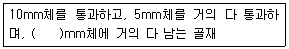
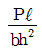
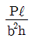
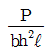
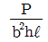
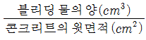
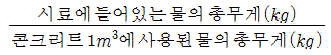
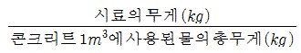
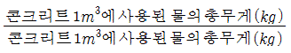

콘크리트기능사 (2008-10-05 기출문제)
1과목: 콘크리트재료
1. 콘크리트용 잔골재로 적합한 조립률의 범위는?
- 1.1~1.7
- 1.7~2.2
- 2.3~3.1
- 3.7~4.6
(정답률: 82%)

2. 해수, 산, 염류 등의 작용에 대한 저항성이 커서 해수공사에 알맞고 수화열이 많아서 한중 콘크리트에 알맞은 특수 시멘트는?
- 팽창성 시멘트
- 알루미나 시멘트
- 초조강 시멘트
- 석면 달열 시멘트
(정답률: 81%)
3. 콘크리트를 친 후 시멘트와 골재알이 가라 앉으면서 물이 올라와 콘크리트의 표면에 떠오른다. 이러한 현상을 무엇이라 하는가?
- 응결 현상
- 블리딩(bleeding)현상
- 레이턴스(laitance)
- 유동성
(정답률: 88%)
4. 가루 석탄을 연소 시킬 때 굴뚝에서 집진기로 모은 아주 작은 입자의 재이며, 실리카질 혼화재로 입자가 둥글고 매끄럽기 때문에 콘크리트의 워커빌리티를 좋게 하고 수화열이 적으며, 장기 강도를 크게 하는 것은?
- 실리카 퓸
- 플라이 애쉬
- 고로 슬래그 미분말
- AE제
(정답률: 84%)
5. 콘크리트가 경화되는 중에 부피를 늘어나게 하여 콘크리트의 건조수축에 의한 균열을 억제하는데 사용하는 혼화재료는?
- 포졸란
- 팽창재
- AE제
- 경화촉진제
(정답률: 81%)
6. 고로 슬래그 시멘트에 대한 설명으로 틀린 것은?
- 내화학성이 좋으므로 해수, 하수, 공장폐수와 닿는 콘크리트 공사에 적합하다.
- 수화열이 적어서 매스 콘크리트에 사용된다.
- 응결시간이 빠르고 장기강도가 작으나 조기강도가 크다.
- 제철소의 용광로에서 선철을 만들 때 부산물로 얻는 슬래그를 이용한다.
(정답률: 60%)
7. 기상작용에 대한 골재의 내구성을 알기 위한 시험은 다음 중 어느 것인가?
- 골재의 밀도 시험
- 골재의 빈틈율 시험
- 골재의 안정성 시험
- 골재에 포함된 유기불순물 시험
(정답률: 77%)
8. 다음 표준체 중에서 골재의 조립률을 구할 때 사용하는 체가 아닌 것은?
- 65mm
- 40mm
- 2.5mm
- 0.6mm
(정답률: 67%)
9. 혼화재와 혼화제의 분류에서 혼화재에 대한 설명으로 알맞은 것은?
- 사용량이 비교적 많으나 그 자체의 부피가 콘크리트 등의 비비기 용적에 계산되지 않는 것
- 사용량이 비교적 많아서 그 자체의 부피가 콘크리트 등의 비비기 용적에 계산되는 것
- 사용량이 비교적 적으나 그 자체의 부피가 콘크리트 등의 비비기 용적에 계산되는 것
- 사용량이 비교적 적어서 그 자체의 부피가 콘크리트 등의 비비기 용적에 계산되지 않는 것
(정답률: 67%)
10. 잔골재의 정의에 대한 아래 표의 ( )에 알맞은 것은?

- 2.5
- 1.2
- 0.5
- 0.08
(정답률: 60%)
11. 다음 중 천연 골재에 속하지 않는 것은?
- 강모래, 강자갈
- 산모래, 산자갈
- 바닷모래, 바닷자갈
- 부순모래, 슬래그
(정답률: 89%)
12. 조강 포틀랜드 시멘트의 며칠 강도가 보통 포틀랜드 시멘트의 28일 강도와 비슷한가?
- 3일
- 7일
- 14일
- 28일
(정답률: 58%)
13. 시멘트와 물을 반죽한 것을 무엇이라 하는가?
- 모르타르
- 시멘트 풀
- 콘크리트
- 반죽질기
(정답률: 85%)
14. 일반적으로 콘크리트를 구성하는 재료 중에서 부피가 가장 큰 것부터 작은 순으로 나열한 것은?
- 골재 ＞ 공기 ＞ 물 ＞ 시멘트
- 골재 ＞ 물 ＞ 시멘트 ＞ 공기
- 물 ＞ 시멘트 ＞ 골재 ＞ 공기
- 물 ＞ 골재 ＞ 시멘트 ＞ 공기
(정답률: 71%)
15. 다음 중 시멘트의 제조 과정에서 응결지연제로 석고를 클링커 질량의 약 몇 % 정도 넣고 분쇄하는가?
- 3%
- 6%
- 10%
- 16%
(정답률: 70%)
16. 굵은 골재의 밀도시험에서 5mm 체를 통과하는 시료는 어떻게 처리해야 하는가?
- 모두 버린다
- 다시 체가름한다.
- 전부 포함시킨다.
- 5mm 체를 통과하는 시료만 별도로 시험한다.
(정답률: 55%)
17. 시멘트 모르타르의 압축 강도 시험에서 표준모래를 사용하는 이유로 가장 타당한 것은?
- 가격이 저렴하여
- 구하기가 쉬우니깐
- 건설현장에서도 표준모래를 사용하므로
- 시험조건을 일정하게 하기 위해
(정답률: 75%)
18. 잔골재 체가름 시험에서 조립률의 기호는?
- AM
- AF
- FM
- OMC
(정답률: 82%)
19. 잔 골재의 절대 건조 상태의 무게가 100g, 표면 건조 포화 상태의 무게가 110g, 습윤 상태의 무게가 120g이었다면 이잔 골재의 흡수율은?
- 5%
- 10%
- 15%
- 20%
(정답률: 60%)
20. 시멘트가 응결할 때 화학적 반응에 의하여 수소가스를 발생시켜 모르타르 또는 콘크리트 속에 아주 작은 기포를 생기게 하는 혼화제로 알루미늄가루 등을 사용하며 프리팩트 콘크리트용 그라우트나 PC용 그라우트에 사용하면 부착을 좋게 하는 것은?
- 발포제
- 방수제
- 촉진제
- 급결제
(정답률: 83%)
2과목: 콘크리트시공
21. 가경식 믹서를 사용하여 콘크리트 비비기를 할 경우 비비기 시간은 믹서 안에 재료를 투입한 후 얼마 이상을 표준으로 하는가?
- 1분
- 30초
- 1분 30초
- 2분
(정답률: 86%)
22. 수중 콘크리트의 타설에 대한 설명으로 옳지 않은 것은?
- 콘크리트를 수중에 낙하 시키지 말아야 한다.
- 수중의 물의 속도가 30cm/sec 이내 일때에 한하여 시공한다.
- 콘크리트 면을 가능한 한 수평하게 유지하면서 소정의 높이 또는 수면상에 이를 때까지 연속해서 타설해야 한다.
- 한 구획의 콘크리트 타설을 완료한 후 레이턴스를 모두 제거하고 다시 타설하여야 한다.
(정답률: 64%)
23. 콘크리트 배합에 있어서 단위수량 160kg/m3, 단위시멘트량 310kg/m3, 공기량 3%로 할 때 단위골재량의 절대부피는? (단, 시멘트의 비중은 3.15이다.)
- 0.71m3
- 0.74m3
- 0.61m3
- 0.64m3
(정답률: 39%)
24. 콘크리트 배합설계에서 물-시멘트비가 48%, 잔골재율이 35%, 단위수량이 170kg/m3을 얻었다면 단위시멘트량은 약 얼마인가?
- 485kg/m3
- 413kg/m3
- 354kg/m3
- 327kg/m3
(정답률: 54%)
25. 콘크리트의 다지기에 있어서 내부진동기를 사용할 경우 아래층의 콘크리트 속에 몇 cm정도 찔러 넣어야 하는가?
- 5cm
- 10cm
- 15cm
- 20cm
(정답률: 61%)
26. 콘크리트 치기에 앞서 거푸집에 충분히 물을 뿌려야 하는 이유로 가장 중요한 것은?
- 거푸집의 먼지를 청소한다.
- 콘크리트 치기의 작업이 용이하다.
- 거푸집을 재사용함이 편리하다.
- 거푸집이 시멘트의 경화에 필요한 수분을 흡수하는 것을 방지한다.
(정답률: 74%)
27. 공장에 있는 고정 믹서에서 어느 정도 콘크리트를 비빈 다음, 트럭 믹서에 싣고 비비면서 현장에 운반하는 레디믹스트 콘크리트는?
- 벌크 믹스트 콘크리트
- 센트럴 믹스트 콘크리트
- 트랜싯 믹스트 콘크리트
- 슈링크 믹스트 콘크리트
(정답률: 39%)
28. 다음 중 콘크리트 운반기계에 포함되지 않는 것은?
- 버킷
- 배처 플랜트
- 슈트
- 트럭 애지데이터
(정답률: 75%)
29. 콘크리트를 타설한 후 다지기를 할 때 내부 진동기를 찔러 넣는 간격은 어느 정도가 적당한가?
- 25cm이하
- 50cm이하
- 75cm이하
- 100cm이하
(정답률: 73%)
30. 콘크리트 배합에 대한 설명 중 옳은 것은?
- 시방배합에서 골재량은 공기중 건조상태에 있는 것을 기준으로 한다.
- 설계기준강도는 배합강도보다 충분히 크게 정하여야 한다.
- 무근 콘크리트의 굵은 골재 최대치수는 150mm이하가 표준이다.
- 단위 시멘트량은 원칙적으로 단위수량과 물-시멘트비로 부터 정한다.
(정답률: 47%)
31. 한중 콘크리트는 양생 중에 온도를 최소 얼마 이상으로 유지해야 하는가?
- 0℃
- 5℃
- 15℃
- 20℃
(정답률: 82%)
32. 수중콘크리트를 타설할 때 사용되는 기계 및 기구와 관계가 먼 것은?
- 트레미
- 슬립품페이버
- 밑열림상자
- 콘크리트펌프
(정답률: 62%)
33. 콘크리트 양생에 관한 다음 설명 중 틀린 것은?
- 타설 후 건조 및 급격한 온도변화를 주어서는 안된다.
- 경화중에 진동, 충격 및 하중을 가해서는 안된다.
- 콘크리트 표면은 물로 적신 가마니 포대 등으로 덮어 놓는다.
- 조강 포틀랜드 시멘트를 사용할 경우 적어도 1일간 습윤 양생한다.
(정답률: 74%)
34. 시방서 또는 책임기술자가 지시한 배합을 무엇이라 하는가?
- 현장배합
- 시방배합
- 복합배합
- 용적배합
(정답률: 85%)
35. 콘크리트의 배합을 정하는 경우에 목표로 하는 강도를 배합강도라고 한다. 배합강도는 일반적인 경우 재령 몇 일의 압축강도를 기준으로 하는가?
- 14일
- 18일
- 28일
- 32일
(정답률: 84%)
36. 수송관 속의 콘크리트를 압축공기로써 압송하며 터널 등의 좁은 곳에 콘크리트를 운반하는데 편리한 콘크리트 운반장 비는?
- 운반차
- 콘크리트 플레이서
- 슈트
- 버킷
(정답률: 75%)
37. 모르타르 또는 콘크리트를 압축 공기에 의해 뿜어 붙여서 만든 콘크리트로 비탈면의 보호, 교량의 보수 등에 쓰이는 콘크리트는?
- 진공 콘크리트
- 프리팩트 콘크리트
- 숏크리트
- 수밀 콘크리트
(정답률: 82%)
38. 콘크리트의 경화나 강도발현을 촉진하기 위해 실시하는 촉진양생의 종류에 속하지 않는 것은?
- 습윤양생
- 증기양생
- 오토클레이브양생
- 전기양생
(정답률: 43%)
39. 잔 골재의 절대부피가 0.324m3이고 골재의 절대부피는 0.684m3일 때 잔 골재율을 구하면?
- 16%
- 17.1%
- 24.5%
- 47.4%
(정답률: 49%)
40. 콘크리트의 압축강도 fck와 물-시멘트비에 관한 설명으로 옳지 않는 것은?
- 시멘트 사용량이 일정할 때 물의 사용량이 적을수록 압축강도 fck는 크다.
- 물-시멘트비가 작을수록 압축강도 fck는 작아진다.
- 물의 양이 일정하면 시멘트 양이 클수록 압축강도 fck는 커진다.
- 압축강도 fck는 물-시멘트비와 밀접한 관계가 있다.
(정답률: 44%)
3과목: 콘크리트 재료시험
41. 콘크리트 슬럼프 시험은 굵은 골재 최대치수가 몇 mm이상 인 경우에는 적용할 수 없는가?
- 40mm
- 30mm
- 25mm
- 20mm
(정답률: 59%)
42. 콘크리트 인장강도 시험을 실시하였다. 공시체의 크기는 ø15×30cm이며, 시험 최대하중은 10600kg이었다. 이 때 인장강도는 얼마인가?
- 10kg/cm2
- 15kg/cm2
- 20kg/cm2
- 25kg/cm2
(정답률: 48%)
43. 굳지 않은 콘크리트의 압력법에 의한 공기 함유량 시험에서 골재의 수정계수 결정시 필요하지 않는 것은?
- 시료 중의 잔골재의 무게
- 시료 중의 굵은골재의 무게
- 용기의 1/3까지의 채운 물의 무게
- 콘크리트 시료의 부피
(정답률: 49%)
44. 콘크리트의 휨강도 시험용 공시체의 길이와 높이에 대한 설명으로 옳은 것은?
- 길이는 높이의 2배보다 10cm이상 더 커야 한다.
- 길이는 높이의 3배보다 8cm이상 더 커야 한다.
- 길이는 높이의 4배이상 이어야 한다.
- 길이는 높이의 5배이상 이어야 한다.
(정답률: 74%)
45. 굵은 골재의 최대치수가 40mm 이하인 콘크리트의 압축강도 시험용 원주형 공시체의 직경과 높이로 가장 적합한 것은?
- ø5×10cm
- ø10×10cm
- ø15×20cm
- ø15×30cm
(정답률: 65%)
46. 콘크리트 압축강도 시험에 사용하는 시료의 양생 온도 범위로 가장 적합한 것은?
- 0~4℃
- 6~10℃
- 11~15℃
- 18~22℃
(정답률: 68%)
47. 콘크리트 배합설계 순서 중 가장 마지막에 하는 작업은?
- 굵은골재의 최대치수 결정
- 물-시멘트비 결정
- 골재량 산정
- 시방배합을 현장배합으로 수정
(정답률: 76%)
48. 잔골재의 밀도 및 흡수율 시험을 1회 수행하기 위한 표면 건조 포화상태의 시료 량은 최소 몇 g 이상이 필요한가?
- 100g
- 500g
- 1500g
- 5000g
(정답률: 67%)
49. 콘크리트 압축강도 시험체의 지름은 골재 최대치수의 몇배 이상이어야 하는가?
- 3배
- 4배
- 5배
- 6배
(정답률: 59%)
50. 콘크리트의 휨강도 시험에서 공시체가 지간의 3등분 중앙부에서 파괴 되었을 때의 휨강도를 구하는 공식으로 옳은 것은? (단, P:시험기에 나타난 최대하중(kg), ℓ:지간길이(cm), b:파괴단면의 나비(cm), h:파괴 단면의 높이(cm))




(정답률: 73%)
51. 빈틈이 적은 골재를 사용한 콘크리트에 나타나는 현상으로 잘못된 것은?
- 강도가 큰 콘크리트를 만들 수 있다.
- 경제적인 콘크리트를 만들 수 있다.
- 건조 수축이 큰 콘크리트를 만들 수 있다.
- 마멸 저항이 큰 콘크리트를 만들 수 있다.
(정답률: 54%)
52. 콘크리트의 슬럼프 시험에 대한 설명으로 옳은 것은?
- 콘크리트가 내려앉은 길이를 5mm의 정밀도로 측정한다.
- 시료는 슬럼프 콘의 높이를 3등분하여 3층으로 나누어 넣고 가운데 층만 25회 다진다.
- 슬럼프 콘에 시료를 채우고 벗길때 까지의 전작업 시간은 3분 30초 이내로 한다.
- 슬럼프 콘 벗기는 작업은 10초 정도로 천천히 해야 한다.
(정답률: 52%)
53. 콘크리트 압축강도 시험용 공시체의 표면을 캐핑하기 위한 시멘트 풀의 물-시멘트비(W/C)는 어느 정도가 적당한가?
- 30~35%
- 37~40%
- 17~20%
- 27~30%
(정답률: 52%)
54. 다음 중 워커빌리티(workability)를 판정하는 시험방법은?
- 압축강도시험
- 슬럼프시험
- 블리딩시험
- 단위무게시험
(정답률: 74%)
55. 골재알이 공기중 건조상태에서 표면건조 포화상태로 되기까지 흡수된 물의 양을 나타내는 것은?
- 함수량
- 흡수량
- 유효흡수량
- 표면수량
(정답률: 58%)
56. 굳지않은 콘크리트의 공기 함유량 시험방법 중에서 보일(Boyle)의 법칙을 이용하여 공기량을 구하는 것은?
- 수주압력법
- 공기실 압력법
- 무게법
- 체적법
(정답률: 81%)
57. 실내에서 건조시킨 상태로 골재의 알 속의 일부에만 물기가 있는 상태를 무엇이라 하는가?
- 절대건조상태
- 표면건조 포화상태
- 습윤상태
- 공기중 건조상태
(정답률: 62%)
58. 표면 건조 포화 상태 시료의 질량이 4000g 이고, 물속에서 철망태와 시료의 질량이 3070g이며 물속에서 철망태의 질량이 580g, 절대건조 상태 시료의 질량이 3930g일 때 이 굵은 골재의 절대 건조 상태의 밀도를 구하면? (단, 시험온도에서의 물의 밀도는 1g/cm3이다.)
- 2.30g/cm3
- 2.40g/cm3
- 2.50g/cm3
- 2.60g/cm3
(정답률: 38%)
59. 다음 중 콘크리트의 블리딩 시험에 필요한 시험기구는?
- 슬럼프 콘
- 메스실린더
- 강도 시험기
- 데시케이터
(정답률: 53%)
60. 콘크리트의 블리딩량을 계산하는 식으로 옳은 것은?




(정답률: 63%)